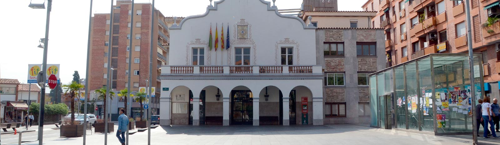

Dades de contacte de l'ajuntament de Cerdanyola del Vallès

 |
Pl. Francesc Layret, s/n, 08290 Cerdanyola del Vallès |
 |
935 80 88 88 |
 |
|
 |
|
 |
|
 |
YouTube |
 |
L'horari d'atenció al públic de
l'OAC és de dilluns a divendres de 8:30 a 14:30.
Dimarts i dijous també de 15 a 18h. Totes les
atencions presencials son amb cita prèvia,
que es pot sol·licitar en aquest enllaç,
o bé trucant al telèfon general del’Ajuntament.
Excepcionalment, els empadronaments de nadons
es poden fer sense cita prèvia